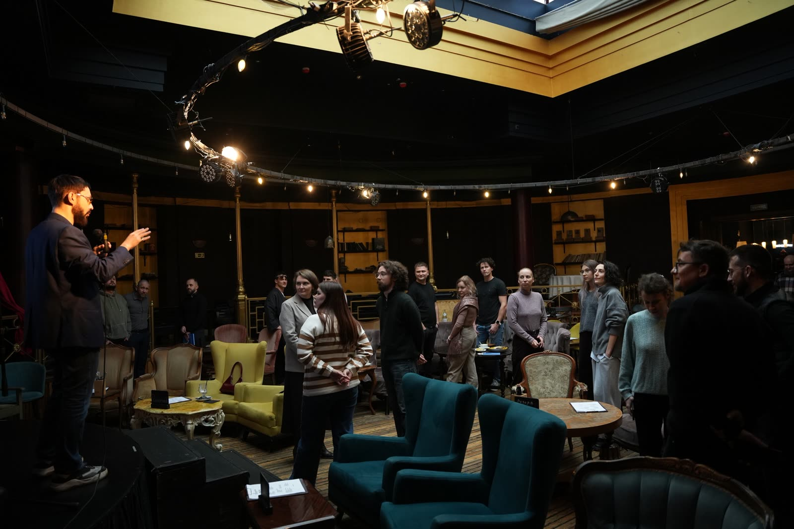

Нетворкинг «Шаг Вперёд»
Моя роль: презентовал AI-лабораторию клуба Go4Future
Меня пригласили на первый открытый нетворкинг бизнес-клуба Go4Future — не со спонсорским докладом, а с коротким рассказом о том, чем внутри клуба будет AI-лаборатория. Ниже — что я показывал и что происходило вокруг.
- Когда
- 8 ноября 2026 · воскресенье · 15:00–18:00
- Организатор
- Бизнес-клуб Go4Future · ведёт Валерий

Моя часть: AI-лаборатория Go4Future
Слот был короткий, поэтому я сразу перешёл к делу: AI-лаборатория — это не «магия нейросетей», а рабочее место для задач резидентов. Показал три вещи, которые дают представление о формате.
- ВозможностиЧто лаборатория даёт участнику клуба: разобрать рутину, собрать собственный инструмент, проверить гипотезу до вложений — от одного запроса до маленького продукта.
- Школа в клубеОбучение построено на своих задачах: не слайды про нейросети, а практика на реальном кейсе участника, с разбором и понятным результатом на выходе.
- Подход к решению задачСначала разложить задачу на шаги и понять, где вообще нужен AI, — и только потом выбирать инструменты. Иногда честный ответ «здесь AI не нужен» экономит больше, чем самый модный сервис.
- Анонс курсаВ конце анонсировал ближайший курс лаборатории и пригласил участников записаться в лист ожидания прямо на встрече.
- Прототипы курсовПрототипы курсов по вайбкодингу открыты и доступны — можно посмотреть программу, модули и практику до старта потока. Открыть прототипы курсов →
Что происходило на встрече
Go4Future стартовал не с пафосной презентации, а с плотного рабочего тест-драйва. Три часа без спонсорских докладов и продаж со сцены.
- Модерируемый нетворкингВместо хаоса у кофе-поинта — фасилитация: короткая формулировка своей силы, выявление реального запроса, калибровка позиционирования и поиск взаимных решений прямо за столом.
- Живой бизнес-разборНа сцене разобрали действующий проект: архитектура, системные ограничения, слепые зоны и гипотезы роста. Методология в действии на реальном примере, а не на кейсе из учебника.
- Экосистема клубаПрезентация шести направлений: школа продаж, школа системного маркетинга, AI-лаборатория, академия спикерства, бизнес-акселератор и школа осознанности.
Люди или неловко переминаются у кофе-поинта, раздают визитки вслепую, или слушают тех, кто громче всех говорит о себе. В итоге человек уходит с пачкой ненужных контактов и ощущением впустую потраченного времени.
Место
«Антресоль и перец» на Марата, 1/71 — верхний этаж с застеклённым витражом, сценой и бархатными креслами. Камерный зал на несколько десятков человек: видно всех, и разговор не распадается на отдельные компании.